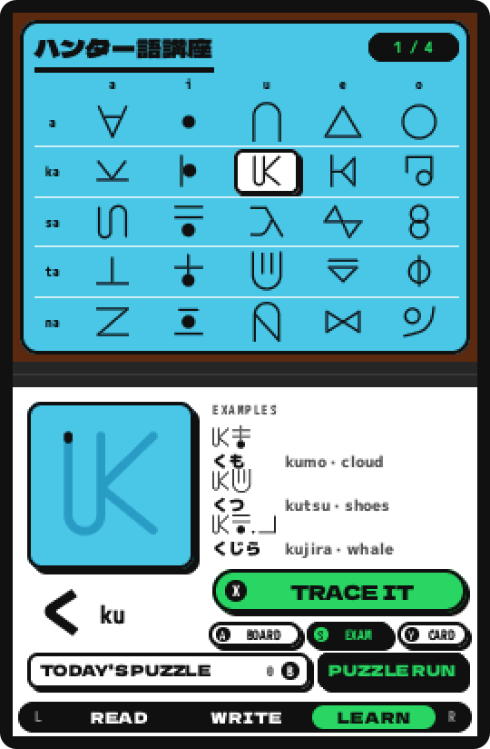
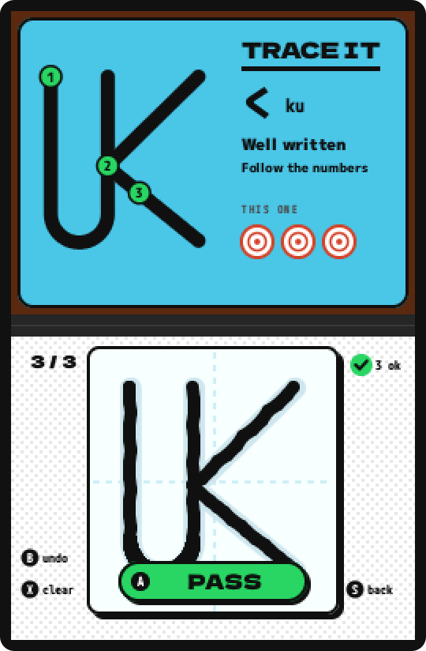
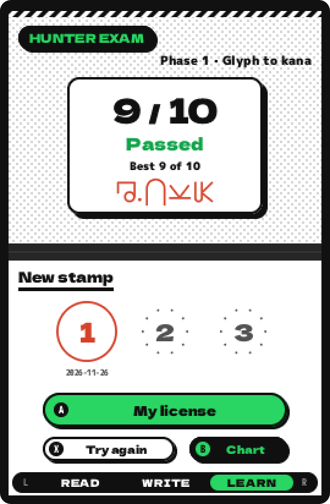
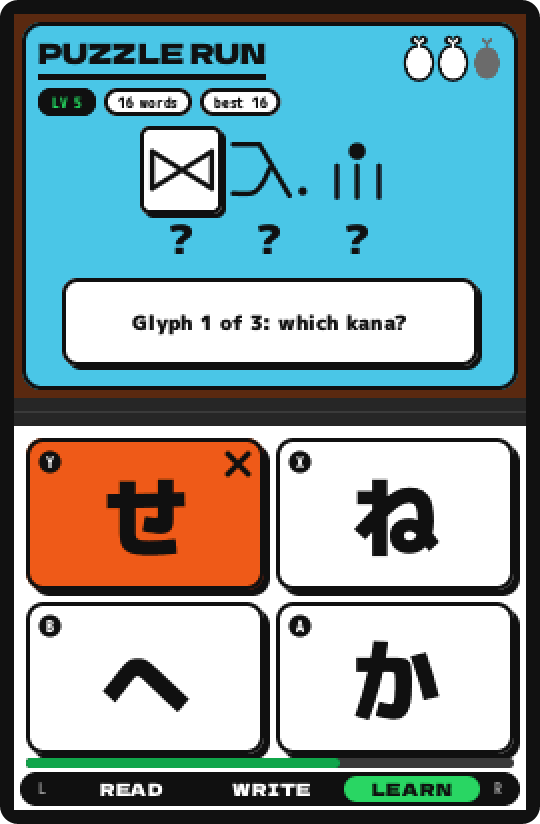

プロジェクト · DSi 版 HxH Translator
ニンテンドーDSiで『HUNTER×HUNTER』のハンター文字を読む
HxH Translator の 3 つのモード「読む」「書く」「学ぶ」を、2008 年の携帯ゲーム機向けに作り直しました。133 MHz の ARM9 で動く Rust のアプリ、本体のトゥーンシェーディング用ハードウェアが描く 3D のビートル、そして DSi のカメラ越しに 1 行を読む、計算量が Web版の 5 分の 1 の 100 KB の int8 リーダーです。
現状（2026年11月26日） アプリは実機の DSi で動き、そこでオーナーのテストにも合格しています。バージョン 0.2.0 を itch.io で無料公開しています。ソースコードも公開していません。リーダーのモデル dsi_v1 は、ほかのモデルと一緒に Hugging Face で公開しています。
 ホーム、ふたは閉じたまま
ホーム、ふたは閉じたまま 開いたら: モードを選ぶ
開いたら: モードを選ぶ 読む: 1 行
読む: 1 行HxH Translator は、3 つのモードを持つ Webアプリです。読む（Read）は、スマホのカメラをハンター文字に向けて、かなとラテン文字に変えます。書く（Write）は、入力した文字をハンター文字にします。学ぶ（Learn）は、この文字を教えます。この記事は、その 3 つすべてをニンテンドーDSiに載せた話です。DSi は 2008 年の携帯ゲーム機で、小さな画面 2 つ、タッチペン、カメラ、そして 133 MHz のプロセッサを備えています。いちばん難しかったのは「読む」でした。PC なら 1 行を約 1 ミリ秒で読めますが、DS（エミュレーター上）では 11 秒かかりました。それを縮めるには、計算量が 5 分の 1 のリーダーと、手書きの ARM カーネルが必要でした。
ふたと一緒に開くビートル
Webアプリのマスコットは、羽を開くと画面が現れるビートルです。DSi は折りたたみ式なので、アイデアは自然に決まりました。本体を開くと、ビートルも開くのです。上画面はビートルの画面、下のタッチスクリーンはボタンの並ぶパネルです。3 つのモードは Web版のままです。
コードを書く前に、画面を 12 枚のモックアップとして 1 ページに描きました。どれも本物の 256 × 192 のキャンバスで、DS のピクセルが 1 つ残らず見えるよう、整数倍でしか拡大していません。このページでは何も打ち直していません。Webアプリ自身の文字描画、ビートルのモデル、「学ぶ」のデータ、ローマ字変換をそのまま読み込んでいます。描いてみたことで、いくつかのことが早めに決まりました。ハンター試験の 4 つの答えは Y・X・B・A ボタンの位置に並ぶので、タッチペンはなくても大丈夫です。「学ぶ」の例の文字は ね ではなく く です。ハンター文字の ね は閉じた 1 画なので書き順を見せられませんが、く には 3 画あるからです。
残りのほとんどは、ハードウェアにできることで決まりました。
トゥーンシェーディングは、うれしいおまけでした。Web版はビートルを、べた塗りの色の帯とインクの輪郭線で描きます。DS の 3D チップは、まさにそれをハードウェアでやってくれるのです。問題はプロセッサでした。Web版の「高速」（Fast）リーダーは、1 行を読むのに 1億5400万回の積和演算（MAC）を使います。1 秒あたり 3000万〜6000万回という推測で計算すると、1 行に 2.6〜5 秒かかります。ページ全体から文字を探す行さがしAIなら、1 分近くかかるでしょう。そこで、DSi の「読む」は行を探しません。ガイドバーに 1 行を合わせると、その行だけを読みます。
ハードウェアは C、それ以外は Rust
DS の自作ソフト（ホームブリュー）は、たいてい C で書かれています。このアプリは、無料のツールチェーンとライブラリ群である BlocksDS を使います。Rust も DS のプロセッサ向けにビルドできます（thumbv5te-none-eabi、nightly 版でしか使えないターゲット）。しかも、このプロジェクトの int8 エンジンは、もともと標準ライブラリなしの Rust で書かれていました。そこでアプリを 2 つに分けました。薄い C の層がハードウェアを受け持ち、それ以外はすべて Rust が担当します。
C · BlocksDS
ハードウェアを受け持つ
- 画面の更新を毎回待ち、Rust が変えた行をコピーする
- 3D: ビートルのディスプレイリスト、トゥーンテーブル、輪郭線
- サウンド（maxmod を使用）
- カメラ、SDカード、ROM の中のファイル
- ふた、スリープ、時計
Rust · no_std
それ以外すべて
- すべてのシーン: ホーム、読む、書く、学ぶ
- 自前のフォント描画で、両方の画面を 16 ビットの画像に描く
- ハンター文字のレイアウトと、かなのルール
- 「学ぶ」の類似度、試験、パズル
- int8 リーダー（ARM9 カーネルは高速なチップ内メモリに置く）
Rust 側は、Webアプリの JavaScript を移植したものです。かな変換、ハンター文字のレイアウト、「学ぶ」の類似度とパズル。移植は細かいところで元とずれることがあるので、どの移植もWebアプリ自身のコードと照らし合わせてテストしています。Node のスクリプトが JavaScript を動かして答えを保存し、Rust のテストはそれと一致しなければなりません。
- かな変換: 5,437 種類の入力と 10,769 件の変換ケースで、食い違いは 0。
- 文字のレイアウト: 120 ケースで誤差がフォントサイズの 0.0001 以内。文字列の幅は、Chrome が測った値との差が 0.1 px 以内。
- 「学ぶ」の類似度: 表のかなの全 3,403 組で、誤差がフォントサイズの 0.00000054 以内。そっくりな文字のリスト 200 個、シード付きの試験 15 回、毎日のパズル 440 日分も同じ。
類似度の移植は、一度やり直しました。最初の版は丸めた固定小数点の座標を使っていて、200 個のそっくりリストのうち 5 個で順番が変わってしまったのです。JavaScript 側には完全な同点（は・ば・ぱ は、濁点・半濁点を除けば同じ形）や、0.0000046 しかない差があるので、丸めるだけで隣どうしが入れ替わりました。文字データから直接取った、ビット数の多い整数の座標にしたら直りました。
テストは、Webアプリ自体のバグも 2 つ見つけました。「Reā」という名前を入力すると、「書く」に リーundefined と表示されました。また「constructor」という単語は、JavaScript 自身の Object 関数として引かれてしまい、バーに function Object() { [native code] } と表示されました。どちらも今では Webアプリのコードでも直してあります。
6 つのトラックを同時に
骨組みがエミュレーター（melonDS）でハンター文字を描けるようになったところで、作業を 6 つのトラックに分け、同時に進めました。トラックはそれぞれ専用の AI コーディングのセッションで、自分のファイルだけを担当します。結果は取りまとめ役のセッションに報告され、そこで統合し、ジャーナルを書き、エミュレーターで確認しました。6 つとも約 1 時間で終わりました。
| トラック | 作ったもの | 大事だった数字 |
|---|---|---|
| A テキスト | 3 つの無料フォント（Dela Gothic One、M PLUS 1p、M PLUS 1 Code）から、カーニング付きのビットマップフォントを 46 個作成。画面の文言 482 個を英語と日本語で。 | 変わった枠だけを描き直すことで、手書き 1 フレームの処理が PC で 72.8 µs から 1.0 µs に（49,152 ピクセルではなく、中央値で 77 ピクセル）。 |
| B ビートル | Web版のビートルをそのコードから書き出して軽くし、トゥーンテーブルと輪郭線付きの DS のディスプレイリストに変換。 | 三角形 25,736 個を 1,484 個に。1 フレームあたり、上限 2,048 のうち約 800 ポリゴン。 |
| C 書く | かな変換と、12 キーのトグル入力パッド（タイミングは Web版と同じ）。 | 5,437 個の入力で食い違い 0。Web版のバグを 2 つ発見。 |
| D 学ぶ | 文字の表とその例の単語 200 個、パズル 42 問、類似度、そしてタッチペンでなぞるための新しい採点。 | 完璧になぞれば、83 個のかなすべてでスタンプ 3 つ。そっくりな別の文字では、2 つ以上はもらえない。 |
| E 読む | DS 向けにビルドした int8 エンジンと、いちばん多い種類の層のための手書きの ARM9 カーネル。 | 約 3,200 個のランダムな層と 24 個の基準出力で、PC とビット単位で一致。 |
| F サウンド | Web版の効果音 13 個とキーの音 12 個を、DS のミキサー用に変換。 | キーの音はどれも Web版との差が 2 Hz 以内。サウンドは 478 KB。 |
 最初の ROM
最初の ROM 開いた 3D のビートル
開いた 3D のビートルエミュレーターでは見えなかったこと
melonDS はとてもよくできたエミュレーターですが、3D の 1 フレームを一度にまとめて描きます。本物の DS は、画面を表示しながら 3D の絵を1 ラインずつ描き、描き終えたラインを小さなバッファにためておきます。オーナーの DSi で初めてアプリを動かしたとき、ビートルは穴だらけでした。殻には白い点が横に何列も並び、開くと画面がずたずたに乱れました。どれも、エミュレーターでは一度も出なかった症状です。
白く見えたのは、ビートルの後ろの絵が透けていたからです。つまり、そのラインではビートル自身のピクセルが描かれていませんでした。穴が並んでいたのは、殻の上の目のレンズのように、たくさんの層が重なるラインでした。アプリにはデバッグ用のオーバーレイがあったので、次の ROM には、機能をオフにする 4 つのテストモードを加えました。オーナーが DSi でそれぞれを試しました。
| T0、設計どおり | T1、輪郭線なし | T2、リアプレーン・ビットマップなし | T3、どちらもなし | |
|---|---|---|---|---|
| ホーム、閉じた状態 | 穴あり | 穴あり | 欠けなし | 欠けなし |
| 開いた状態 | 穴あり | 穴あり | 欠けなし | 欠けなし |
犯人はリアプレーン・ビットマップ（rear-plane bitmap）でした。3D シーンの後ろに絵を置く DS の機能です。これを使うと、3D チップはビートルの後ろのピクセル 1 つ 1 つについて、色と深度の値を読まなければなりません。混み合ったラインでは、その余分な読み込みのせいで時間が足りなくなっていたのです。輪郭線のほうは、目に見える負担にはなっていませんでした。修正では、ビートルの後ろの絵を 3D チップから完全に外し、ふつうの 2D レイヤーに移しました。
最初のビルド
混み合ったラインに穴
修正後
DSi で欠けなし
次の実機テストで、もう 1 つ見つかりました。言葉が表示されたり、ビートルが開いたり閉じたりするたびに、画面全体が 1 フレームだけ白く点滅したのです。ビートルの後ろに古い言葉の残像が残らないよう、変更のたびに、まず背景だけを送り、1 フレーム後に全体の絵を送っていました。その間、画面には白い紙しか映っていなかったのです。エミュレーターでは、ほとんど見えないちらつきでした。修正は新しいコマンドです。シーンがビートルの後ろに置く絵を渡し、両方のレイヤーが同じ画面更新で切り替わります。次のビルドへのオーナーの評価は「ばっちり動いています」でした。
4 MB に収める
DSi のメモリは 16 MB ですが、同じ ROM は初代 DS でも動き、そちらは 4 MB です。最初は、すべてがプログラムのメモリイメージに入っていました。フォントだけで 1.3 MB、サウンドが半メガバイト、さらにリーダーのモデルとそのテスト用の帯で 0.7 MB。初代 DS モードでリーダーを切り替えると、「NO MEMORY: THE READER NEEDS 360K」（メモリ不足: リーダーには 360K が必要）と表示されました。リーダーは失敗しうるやり方でメモリを要求するので、クラッシュではなく、きちんとしたメッセージになったのです。とはいえ、これはこの先の問題の前ぶれでした。
解決策は、フォント、文言、サウンド、モデルを ROM 自身のファイルシステム（NitroFS）に移し、シーンが必要とするときに読み込むことでした。フォントは初めてそれで描くときに、文言は一度に 1 言語ぶんだけ、サウンドは初めて鳴らすときに、リーダーは一度に 1 つだけ。各シーンは入ったときに組み立てられ、最初のフレームのあとで、使わなかったものはすべて解放されます。
| 前 | 後 | |
|---|---|---|
| メモリ上の読み取り専用データ | 2,676,824 B | 180,992 B |
| 常駐イメージ全体 | 3,196,500 B | 938,188 B |
| 起動時の空きメモリ | 473,516 B | 2,731,828 B |
| 各シーンでの空き（melonDS で測定） | ||
| ホーム | – | 2,719 KB |
| 書く（ともだち を入力したあと） | – | 2,428 KB |
| 学ぶ（文字の表） | – | 2,661 KB |
どのシーンでも、最大の空きブロックは空きの合計と同じでした。つまり、メモリの断片化は起きていませんでした。
「書く」: ガラケー、キーボード、ペン
「書く」は、昔のガラケーのように使えます。キーを 1 回タップすると あ、2 回で い。入力するそばから、上画面がハンター文字を 1 画ずつ書いていきます。知っている単語には意味カードが出ます。たとえば ともだち なら「friend」です。ローマ字や名前は QWERTY キーボードで入力します。書いたものは 7 種類のスタイルのステッカーにでき、DS 用に書いた小さな PNG 書き出しプログラムで、SDカードに PNG として保存されます。
使ってみたオーナーは、手書き入力をリクエストしました。タッチペンでハンター文字を書くと、そのかなが文章に入ります。ペンは 1 画書くごとに、書いた絵を 79 個のテンプレート（すべての文字と、濁点・半濁点の付いた形）と比べます。比べ方は、「学ぶ」がそっくりな文字を探すのに使うのと同じ種類の、絵と絵の距離です。文字自身の画から作った 3,160 個のテスト用の絵では、正しいかなが第 1 候補になったのは、きれいな絵で 98.9%、雑な絵で 94.3% でした。表示される 5 つの候補に入ったのは 99.2% 以上です。1 回の読み取りにかかる時間は、初代 DS で推定 18 ms です。本物の手書きは手で試しただけで、測定はしていません。
 パッド
パッド ペン
ペン ステッカー
ステッカー ライセンス
ライセンス
「学ぶ」: なぞる、試験、パズル
スマホでは、「指でなぞる」はずっと「あとでやる」機能でした。タッチペンがあれば、それが「学ぶ」の中心になります。なぞる（Trace it）は、画に番号の付いた薄い文字を表示します。それをなぞると、1 画ごとに、文字自身の画からどれだけずれたかで採点されます（平均と、画の両端で）。スタンプ 3 つには、誤差がフォントサイズの 3.2% 以下でなければなりません。そっくりな別の文字は、完璧に書いてもスタンプ 1 つまでです。ハンター試験は 3 段階で出題されます（文字からかな、かなから文字、単語まるごと）。まちがいの選択肢は、その文字の本当のそっくりさんから選ばれ、合格すると上のライセンスがもらえます。
今日のパズルは、1 日 1 語を、1 文字ずつ解読していくパズルです。パズルラン（Puzzle Run）は、あとからオーナーの要望で加わりました。3 回まちがえるまで次々と単語が出てきて、進むほど難しくなります。
| 解いた語数 | レベル | 単語の長さ | まちがいの選択肢 | ローマ字表示 | 1 文字の制限時間 |
|---|---|---|---|---|---|
| 0–2 | 1 | 1–2 | 似ていない | あり | なし |
| 3–5 | 2 | 2–3 | 少し似ている | あり | なし |
| 6–9 | 3 | 2–3 | もっと似ている | あり | なし |
| 10–14 | 4 | 3–4 | いちばん似た 10 個 | なし | なし |
| 15 以上 | 5+ | 3–5 | いちばん似た 6 個 | なし | 10 秒。1 語ごとに ½ 秒ずつ短くなり、最短 4 秒 |

文字の表
なぞる
試験
パズルラン133 MHz の ARM9 で読む
リーダーは、小さな畳み込みニューラルネットワークです（1 行をどう読むかは「しくみ」の記事で紹介しています）。中の数字は int8、つまり 1 つ 1 バイトで記録され、このプロジェクトのエンジンは整数の計算だけでそれを動かします。このエンジンはもともと ESP32 マイコン向けに、標準ライブラリなしの Rust で書かれていたので、DS 向けにもそのままコンパイルできました。問題は速度でした。
スマホや PC は、たくさんの小さな数を一度に掛け算する命令を使って、ネットワークを速く動かします。DS の ARM9 には、その命令がありません。かわりにあるのが SMLAxy です。レジスタの 16 ビットの半分どうしを掛けて、結果を足すところまでを一度にやる命令です。トラック E は、これを中心に 1×1 畳み込みのカーネルを書きました。リーダーの仕事の大半をこなす層です。このカーネルは一度に 2 出力 × 4 チャンネルを計算し、長さは 508 バイト。ARM9 のチップ内にある小さな命令メモリに置かれ、メインメモリを待たずに動きます。結果はすべてビット単位で一致しなければなりません。PC と同じバイト、つまりすべての点数の最後の桁まで同じということです。
エミュレーターでの最初の試みでは、読み取りが終わりませんでした。画面は 5 分間 READING（読み取り中）のままでした。原因は遅さではありません。リーダーがスタックをどれだけ使うかを測るツールは、使っていないスタックを決まった模様で塗りつぶして測ります。コンパイラーがこのツールをインライン展開したあと、ツールは呼び出し元がまだ使っている変数の上まで塗ってしまったのです。リーダーが次に使ったポインタはその模様 0xA5C35A3C で、プロセッサは例外（フォールト）を起こしました。例外ハンドラがないので、画面はただ固まりました。PC のテストでは、これは見えませんでした。DS 以外では、この塗りつぶしは何もしないからです。これを直すとリーダーは動き、PC と完全に一致しました。出力の点数 17,472 個中 17,472 個です。
カーネルのおかげで、Web版の「高速」リーダーは 2.7 倍速くなりました。それでも 1 行 11 秒では遅すぎます。カーネルを速くするだけでは限界があり、リーダーそのものを小さくする必要がありました。
dsi_v1: 計算量を 5 分の 1 に
トラック E は、カーネルの実測速度から作ったコストモデルで、小さなリーダーの候補をいくつか見積もりました。そして、実績のあるもののうち、いちばんコストの低いものを勧めました。同じ MobileNetV4 ネットワークの最初の 3 ステージ（完全なリーダーは 4 ステージ）で、高さは 48 ピクセルではなく 32 ピクセルです。このプロジェクトでは、この形をこれまでに 2 回学習させていました。今回は v6 のデータで学習させたので、数字と一部の記号も読めます。そのあと int8 向けにファインチューニングし、Web版のリーダーと同じ変換チェーンを通しました。このチェーンでは、Espressif の int8 シミュレータとビット単位で一致するかを確かめます。
| 「高速」（Web） | dsi_v1 | |
|---|---|---|
| ネットワーク | MobileNetV4-small、4 ステージ | 最初の 3 ステージ |
| 入力の行 | 48 × 768 px | 32 × 512 px |
| パラメータ数 | 323,995 | 96,923 |
| 1 行あたりの積和 | 154.19 M | 30.62 M |
| モデルファイル（int8） | 339,552 B | 103,856 B |
| 作業メモリ | 368,640 B | 163,840 B |
| PC で 1 行（WebAssembly） | 5.96 ms | 1.24 ms |
学習は RTX 4080 SUPER 1 枚で約 30 分でした。内訳は 2 段階のファインチューニング（12,000 ステップと 3,000 ステップ）と、4,000 ステップの量子化を考慮した学習（QAT）です。int8 モデルは、DS 向けを含むエンジンのすべてのビルドで、テスト行 512 本中 512 本が Espressif のシミュレータと一致します。
増えたまちがいの多くは、小さな濁点・半濁点です。高さ 32 ピクセルでは、か を が に変える点は数ピクセルの大きさしかありません。そのため、が → か や ぱ → ば が典型的なまちがいで、単語の間の空白の見落としもあります。それでも本体の上では、この引き換えには価値があります。

速度テストの層ごとの内訳から、次の標的が見えました。1×1 畳み込みは積和 1 回あたり 3.7 プロセッササイクル、それより大きい畳み込みは 4.2 サイクルで動いていました。ところが、まだカーネルのない depthwise 畳み込みは 1 回あたり 18.8 サイクルかかり、全体の時間の 4 分の 1 を占めていました。2 つ目のカーネルは、4 チャンネルを 32 ビットの 1 回の読み込みで取り出し、2 つのマスクで 16 ビットの半分ずつに分けます。アンパック（展開）はしません。積和 4 回に 12 命令で、命令数から数えると 1 回あたり約 3.5 サイクルです。ランダムな層 5,000 個で、食い違いはありませんでした。
もう 1 つの変更で、読み取り中も画面が止まらなくなりました。1 回の読み取りを一気にやると、アプリが 1〜2 秒固まってしまいます。そこでリーダーは、積和約 50万回ずつの小さな区切り（バンド）で動き、毎フレーム約 12 ms で止まるようにしました。DSi リーダーは 86 バンドで、バンドが終わるごとにプログレスバーが伸びていきます。
カメラで読む
DSi のカメラは、リーダーへの入力をほとんどタダでくれます。写真は明るさと色に分かれて届き、明るさの部分がちょうど、リーダーのほしいグレーの画像なのです。カメラのドライバーは、ライブのプレビューをメインメモリの 3 つのバッファに流し込むので、カメラがアプリを待つことはありません。640 × 480 の静止画も、必要なときに撮れます。メモリはオンのときに 888 KB 使い、オフのときはまったく使いません。

- 狙う。プレビューは、ガイドバーの外側が暗くなります。6 フレームごとにバーの内側をさっと調べて、シグナルバーとヒント（「Get closer」＝もっと近づける、「More light」＝もっと明るく）を更新します。
- A を押す。アプリは静止画を撮り、そこからバーの部分を切り出します。切り出した画像は、Webアプリが行を準備するのとまったく同じやり方で縮小され、余白を足して 32 × 512 になります。テストでは Web版自身の JavaScript を Node で動かし、同じバイトになることを確かめています。
- 読む。カメラがオフになり、リーダーがプロセッサとメモリをひとり占めします。リーダーはバンドごとに動き、プログレスバーでは約 37 フレームかかります。
- 結果。吹き出しに、かな、ローマ字、そして知っている単語なら意味が出ます。リーダーの自信が 60% 未満のかなには下線が付き、タップすると次点の候補が見られます。SAVE TO LOG（記録に保存）を押すと、その行が SDカードのテキストファイルに追加されます。
上から下へ書かれた行には、もう 1 つ工夫が必要でした。小さな縦書き用のリーダーがないからです。アプリは、インクのある場所をもとに列を 1 文字ずつに切り分け、それぞれをまっすぐ立てたまま横に並べます。それを横書き用のリーダーが読みます。
ドライバーを書いていると、DS のライブラリにいくつか意外な点が見つかりました。カメラの番号が逆（外側が 1）であること、外側のカメラの映像を左右反転すること、そしてカメラのセンサーが一度も応答しないと、DS の 2 つ目のプロセッサが、メインプロセッサからは何も手が届かないところで永遠に待ち続けることです。
このどれも、エミュレーターではテストできません。エミュレーターが DSi のカメラを再現できるとは知られていないからです。そのため、カメラのコードが PC 以外で初めて動いたのは、オーナーの DSi の上でした。返ってきた報告は「全部動きます」。プレビュー、静止画、ランプが消えること、横書きと縦書きの行を読むこと、そして SDカードの記録です。
現状
ここまでのことはすべて、2026年11月26日の 1 日の出来事です。最初の機能リストから、オーナーが DSi で試した ROM まで。最終的な ROM は 3.8 MB、バージョン 0.1.0 で、アプリ全体が動きます。ビートル、「読む」、ペン付きの「書く」、パズルラン付きの「学ぶ」、そして SDカードへの保存です。
- 公開しました。バージョン 0.2.0 を itch.io で無料配布しています：kokkakniphon.itch.io/hxh-translator-dsi
- DSi での速度は、まだ記録していません。オーバーレイには表示されますが、これまでのテストは、ちゃんと動くかどうかを見るものでした。コストモデルでは、DSi モードで 1 行約 0.6–0.7 秒です。エミュレーターでは、初代 DS の半分のクロックで、depthwise カーネルを入れる前に 2.38 秒でした。
- SDカードの写真を読む機能は予定していて、今はグレーアウトしています。行さがしAIを、時間のかかるバックグラウンド処理として使うことになります。
- 初代 DS（カメラがないので「読む」はグレーアウト）と 3DS では、まだテストしていません。
- ここにある精度の数字は、すべて生成した画像でのものです。ペンと「なぞる」のスタンプは、本物の手書きではなく、合成した絵で調整しています。
覚えておきたい言葉
- ROM
- DS のプログラムとそのデータが入ったファイル。自作ソフトの ROM は、TWiLight Menu++ などのメニューを通して SDカードから動かす。
- 自作ソフト（Homebrew）
- ゲーム機のメーカーではなく、ユーザーが作った、そのゲーム機用のプログラム。
- melonDS
- PC 用の DS・DSi エミュレーター。テストには便利だが、時間は正確ではなく、3D の描き方も本物のチップとは違う。
- ARM9
- DS のメインプロセッサ。もう 1 つの遅いプロセッサ（ARM7）が、サウンド、タッチ、Wi-Fi を受け持つ。
- MAC
- 積和演算 1 回。ニューラルネットワークの基本の計算。DSi リーダーは 1 行に 3060万回を必要とする。
- int8
- ネットワークの数字を 1 つ 1 バイトで記録し、計算を整数で行うこと。
- カーネル
- 1 種類の層のために、1 つのプロセッサ向けに書いた、手で調整した小さなコード。
- ビット単位で一致
- ほぼ同じ数字ではなく、基準とまったく同じバイトを出すこと。
- NitroFS
- ROM の中のファイルシステム。データを起動時にまとめてではなく、必要なときに読み込める。
さらに詳しく
DSi のリーダーは、Web版のリーダーと同じファミリーの、小さなメンバーです。Web版のリーダーをどう学習させ、量子化し、確かめているかは詳細解説にあります。DSi のモデルそのものは Hugging Face にあります。